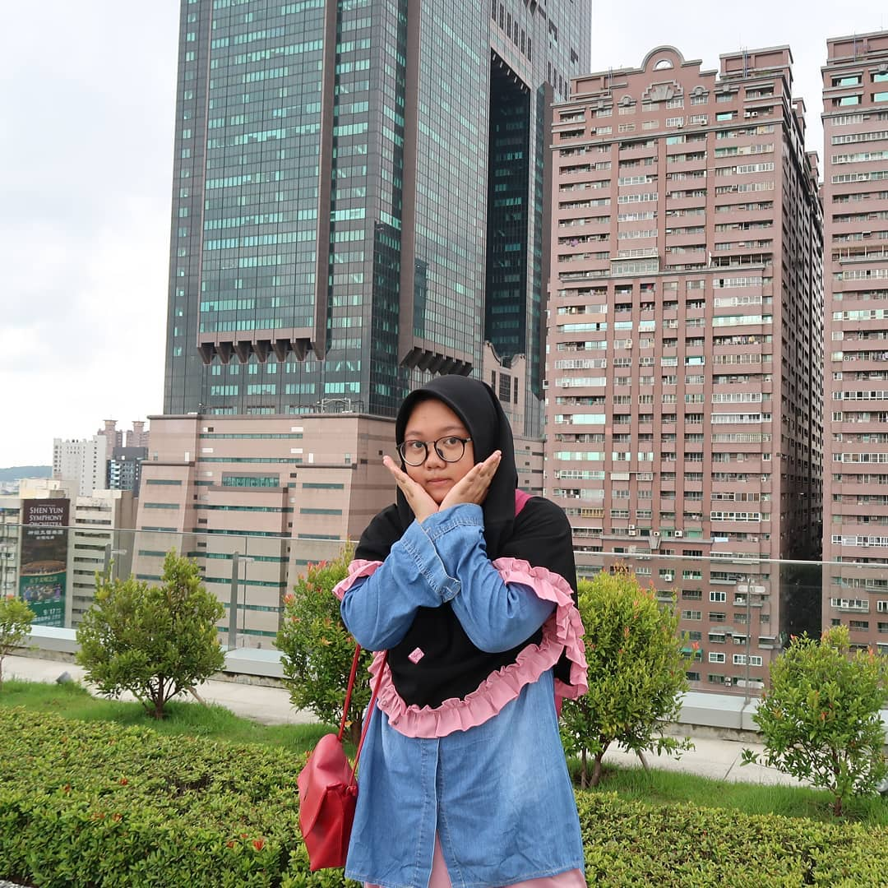
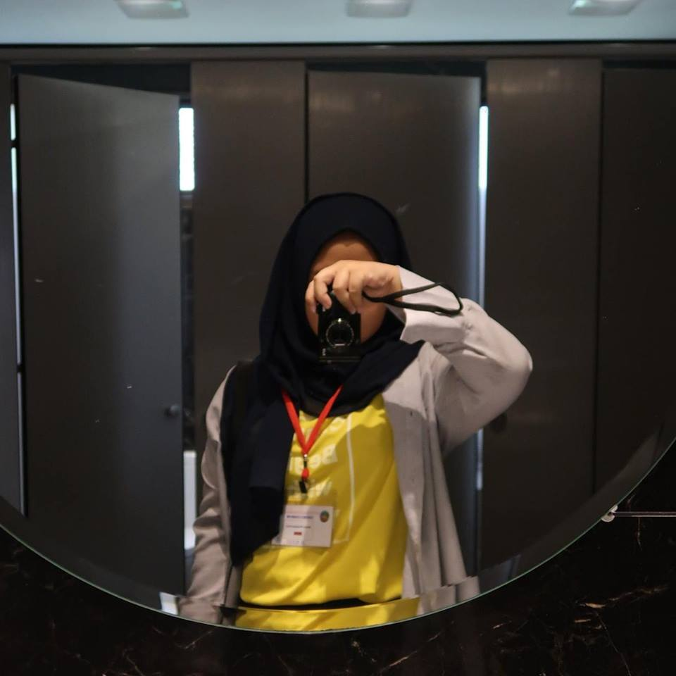

Siapa aku? mungkin tanpa membuka website ini jarang juga ada orang yang mengenalku. Begitupun aku yang tidak mengenalmu. Tapi izinkan aku untuk sedikit menyapamu dengan kata-kataku.
Aku Novera, remaja usia 16 tahun yang sedang mewujudkan banyak mimpi-mimpi besar di hidupku. Aku lahir dan besar di desa yang tentram di Kabupaten Bantul. Aku bersekolah di TK dan SD yang jaraknya sangat dekat dengan rumahku, bahkan saat istirahat aku memilih pulang untuk makan (biar gak jajan, hehe). SMPku mulai agak jauh dari rumah, segala tingkah ruah khas anak remaja aku rasakan di sini. Sampai akhirnya aku tersadar, what life is for?
Aku mencari dan terus mencari, dan salah satu kata-kata dari Imam Syafi'i ini menjadi peganganku.
"Merantaulah..
Orang berilmu dan beradab, tidak diam beristirahat di kampung halaman..
Tinggalkan negerimu dan hiduplah di negeri orang.."
Jadilah aku saat ini berada di Kota Solo yang panas ini (walau Jogja juga sama aja panasnya).
Semoga, nantinya aku bisa merantau jauh dan lebih jauh lagi. bermimpi lebih tinggi dan tinggi lagi. Berada di negara-negara subtropis, negara-negara maju, negara-negara penuh ilmu dan akan kubawa pulang pengalaman hebatku itu ke tanah air tercinta, Indonesia.
Tiada yang menarik dariku, kecuali tingkah overdosisku yang kadang lupa tempat dan waktu (sedangkan teman-temanku pasti langsung pura-pura tak kenal denganku). Tapi, tak apa.
Setidaknya kamu bisa mengenalku yang pura-pura kalem di sini. Ya, di website ini. Sebisa dan secukup mungkin kutuangkan semua isi hatiku. Walau bisa dibilang tulisanku tidak terlalu bagus untuk dibaca.
Tapi, aku senang kamu sanggup membacanya sampai di sini. Terimakasih telah menghargai karya ngebutku, butuh tiga setengah hari mengutak atik HTML dan CSS untuk membuat website standar ini.
Melelahkan, sekaligus menyenangkan pastinya.
Terimakasih untuk BEKRAF, Coding Mum, atas pelajaran yang sangat berharga sekali. Tersanjung rasanya bisa mendapatkan kesempatan untuk membuktikan bahwa anak pondok juga bisa.
Semoga website ini tidak berhenti sampai di sini saja. Dengan pelajaran yang sudah di dapat, semoga noveraa11.github.io akan berkembang lebih baik lagi nantinya.
Dengan rendah hati, blogger bisa dikritik dan bisa diberi saran di instagram pribadinya @noverap11 atau di Facebook Novera Shin HySoo

(mohon maaf muka kek nahan kebelet, resolusinya rendah juga huhu)
Terakhir! Hidup di pondok mengajarkan banyak pengalaman baru, termasuk pemahaman hidup yang bisa kalian baca di menu QOTD. Tapi, aku akan menambahkan beberapa kalimat tentang hidup yang sebenarnya sudah sering kita dengar tapi sering juga kita lupakan.
Ini dari anak kamarku dulu di tahun pertama, inisialnya FBJ dan saat itu dia masih kelas 1 MTs.
6 Hal yang Harus Kita Ingat
1) Allah selalu bersama kita
2) Jodoh gak akan ke mana
3) Kesabaran akan berbuah manis
4) Jangan iri sama kecantikan orang lain (bersyukur)
5) Kita gak sendirian
6) Apapun keadaan kita, kita berhak untuk bahagia

See you, when I see you!